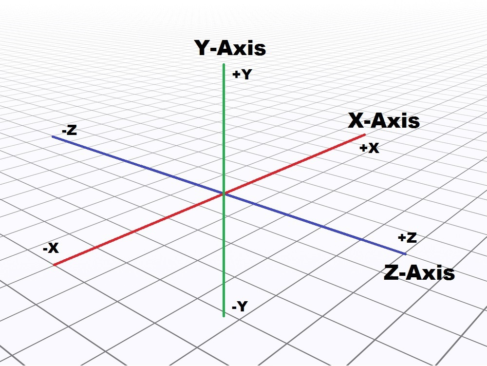
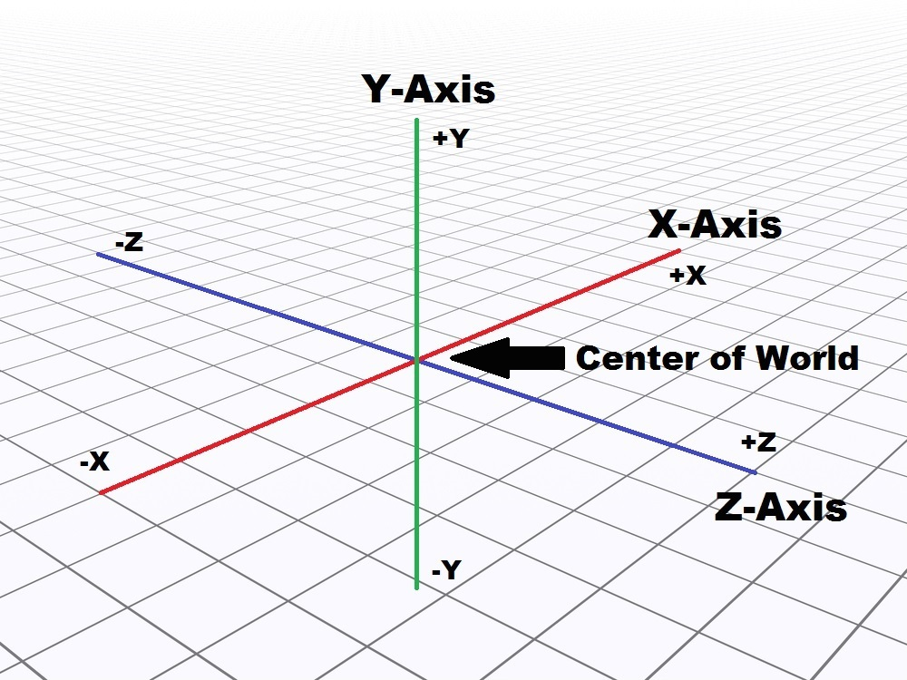

Minecraft has a number of APIs geared towards managing the position of your character and the blocks within the game. Location within the Minecraft world is typically defined using an X, Y, Z coordinate system. There are important points to note with this:
First, the coordinate system is oriented as follows:
And second, the point (0, 0, 0) will correspond approximately to the center of the Minecraft world, as follows:
This means that the X axis will be used to denote north/south, with positive X values denoting north of the center of the world and negative X values denoting south of the center of the world. Likewise, the Z axis will denote east/west, with +Z indicating east and -Z indicating west. The Y axis denotes distance from ground-level — +Y is above ground and -Y is below ground.
Vectors define a position in the Minecraft world. They are nothing more than the three X, Y, and Z coordiantes used to define a position. However, some of the API functions return vectors, so it's handy to know how to use them. And, you can add vectors together, which is quite convenient!
For example, in the
project, we used the pollBlockHits()
function which return a list of hits. We discussed how
hit.pos contained the X, Y, and Z coordinates. The reason is
that hit.pos is a vector!
Say that instead printing the
block that you hit (which is at location hit.pos), you instead
wanted to print the block above it. With vectors, this is easy —
simply add another vector (0,1,0) to it. That will increase the Y value by
1, which will be one above the blobk that you hit. Here's how you could do
it (modifying the code from the
project) — instead of printing:
you can use the following to print the block one above it:
There are two main thing's we'll want to do with Steve's position — find out what it is and change it. Changing it takes effect immediately, so when you change his position, he teleports to the new location!
The player.getPos() function returns the Steve's location as a vector:
The only difference between the two functions is that
player.getPos() returns the exact position of Steve whereas
player.getTilePos() returns the position of the center of the
tile that Steve is standing on. These two functions return coordinates that
are pretty close to each other.
The player.setPos() function sets Steve's location:
In the above, you'll see two ways you can call the function, and both have the same effect:
On Line 4, we've directly called the function with the X, Y, and Z coordinates.
On Line 5, we've called the function a vector that contains the X, Y, and Z coordinates.
Just like previous functions, the only difference between these two
functions
(player.getPos() and
player.getTilePos())
is that they set either the exact position, or the
tile position.
For more detailed information about these and other Minecraft APIs, check out the API documentation linked from the RDE above.